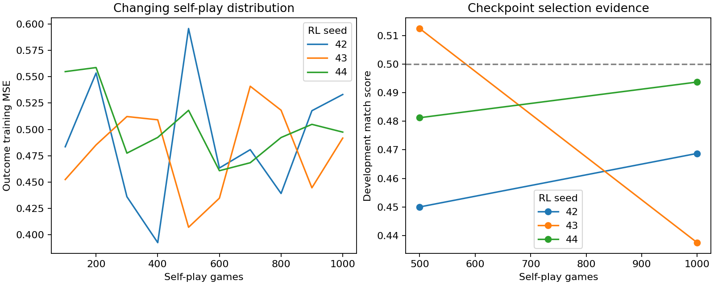

Status: complete. Paid compute C$0. Released demo checkpoints are unchanged.
Twenty games per search budget, using the same preselected supervised seed-42 initialization. Require at least 90% of searched moves to finish depth one and no more than 20% truncated games. Exploration moves are excluded from the search-depth denominator. Pilot games never train the main models.
| Nodes/move | Games | Depth-one completion | Truncation | Mean game seconds | 90th percentile plies |
|---|---|---|---|---|---|
| 128 | 20 | 99.49% | 0.0% | 3.46 | 126.7000000000001 |
| 256 | 20 | 100.00% | 0.0% | 8.75 | 185.90000000000003 |
| 512 | 20 | 100.00% | 0.0% | 15.36 | 163.80000000000004 |
Frozen protocol: 128 nodes/move; 1000 games per seed; forecast 8.70 hours including safety margin, within the nine-hour planning allowance. The original planning protocol specified a persisted 12-hour allowance; any authorized amendment is recorded below.
Authorized amendment: on 13 October the user removed the local CPU time cap. The original 12-hour limit above is historical; scientific settings and elapsed-time accounting remain unchanged.
All recorded games were replayed to verify legal histories and terminal outcomes. Actor exports were reconstructed from preceding weights and original actor metadata to verify each frozen batch.
| Seed | Games | Completed | Truncated |
|---|---|---|---|
| 42 | 1000 | 1000 | 0 |
| 43 | 1000 | 1000 | 0 |
| 44 | 1000 | 999 | 1 |
Mean score across the three fixed RL seeds: 44.12%, opening-pair 95% interval [41.54%, 46.58%]. Conclusion: regression. Seed standard deviation 4.02%, reported separately from match uncertainty.
| Seed | Selected batch path | Development score | Final score | 95% interval | Wins/draws/losses | Equal-time score |
|---|---|---|---|---|---|---|
| 42 | batch-010.npz | 46.88% | 39.88% | [0.35625, 0.44125] | 115/89/196 | 40.00% |
| 43 | batch-005.npz | 51.25% | 44.62% | [0.405, 0.4875] | 126/105/169 | 38.75% |
| 44 | batch-010.npz | 49.38% | 47.88% | [0.43625, 0.5225] | 148/87/165 | 44.38% |

Final move-cap adjudications: 1/1200; uncapped opening pairs across all seeds: 199. Uncapped score: 0.440536013400335. Assigning all capped games losses or wins gives score bounds [0.4408333333333333, 0.44166666666666665].
| Model | Validation Stockfish MSE | MAE |
|---|---|---|
| baseline | 0.241584 | 0.320843 |
| 42 | 0.301090 | 0.417867 |
| 43 | 0.273926 | 0.376654 |
| 44 | 0.306823 | 0.424358 |
These teacher errors are measured after selection and cannot choose RL checkpoints. Outcome training MSE uses actual self-play returns and is not comparable to teacher-target MSE. A lower outcome loss can reflect the changing game distribution rather than stronger play.
The aggregate interval is entirely below 50%: this outcome-only RL procedure weakened play against its supervised initialization under the tested conditions. Keep the released model unchanged. Teacher-target MSE also increased, consistent with loss of teacher agreement; this does not establish why playing strength fell.
Possible explanations include noisy terminal targets from shallow self-play, changes in the visited positions, and updates that overwrite useful supervised estimates. These are hypotheses, not isolated causal findings. A separately preregistered follow-up could compare a smaller RL update rate or an explicit constraint toward the initial model, one change at a time. That would be a new treatment, not a repair to these results. This final set is now used evidence; reserve new confirmation data before a later confirmatory claim.
| Seed | Phase | Searched moves | Depth-one fraction | Mean completed depth | Nodes |
|---|---|---|---|---|---|
| 42 | selfplay | 96953 | 0.995998060916114 | 1.4020092209627346 | 12312515 |
| 42 | final | 38673 | 0.9949577224420139 | 1.400848136943087 | 4908892 |
| 42 | equal-time | 7073 | 1.0 | 1.7752014703803196 | 2246995 |
| 43 | selfplay | 101118 | 0.9958464368361716 | 1.4107577285943156 | 12840697 |
| 43 | final | 41932 | 0.9955880950109701 | 1.4291233425546122 | 5328726 |
| 43 | equal-time | 7601 | 1.0 | 1.8267333245625577 | 2475286 |
| 44 | selfplay | 101387 | 0.9955319715545385 | 1.417844496828982 | 12877911 |
| 44 | final | 39427 | 0.9941157075100819 | 1.3760620894311004 | 5007583 |
| 44 | equal-time | 7040 | 1.0 | 1.7860795454545455 | 2247999 |
| Seed | Generated | Completed | Truncated | Generation seconds | Update seconds |
|---|---|---|---|---|---|
| 42 | 1000 | 1000 | 0 | 4208.09 | 1.65 |
| 43 | 1000 | 1000 | 0 | 4219.34 | 0.81 |
| 44 | 1000 | 999 | 1 | 4278.98 | 0.77 |
Independent audit: all 1,920 evaluation PGNs, color pairs, outcome scores, checkpoint identities and aggregate bootstrap verified. Measured saved-game and training-update work: 6.49 hours; excludes preparation, report overhead and interrupted unsaved games.
Recorded study ledger time (including conservatively charged interruption downtime) 12.195 hours. Fresh final positions use unused games from the same historical archive, not a new era or population. Repeated development selection, only three training seeds and finite search budgets restrict conclusions. Aggregate bootstrap uncertainty is conditional on these fixed seeds. No public Elo or general chess-strength claim is made.
Training/evaluation inputs and code hashes are frozen in the protocol. Graceful interruption saves completed games; an unclosed crash interval is charged conservatively to the allowance. See methods and commands.